Open-source application portfolio management
Know every application, and what to do with it
AppWren is one living record of every application an organization runs: who answers for it, what it is for, what it is built on, what it costs, and how healthy it is. From that record it works out a recommendation for each one, and shows the reasoning.


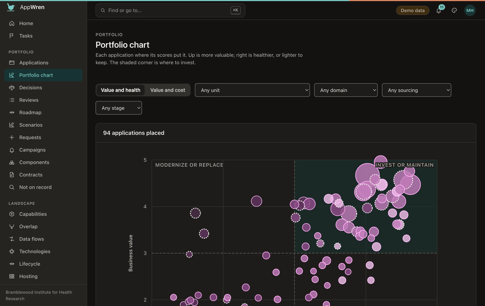
The reasoning is on the screen
Every score opens to its factors, levels, weights, and sources, and every recommendation to the rule that produced it. Nothing is typed in as a verdict.
People decide
The system recommends. A named person records what will be done and why. Where the two differ, both are shown, and neither overwrites the other.
Unknown is not zero
A fact nobody has recorded is left out of the score and counted against confidence. Too little known means Assess, never a guess.
Quiet by design
No scanners, collectors, or agents, and no access to anything else on the network. It records what people know and decide.
Scores
Four scores, each with its working
Business value, technical health, cost and burden, and risk exposure are worked out from the record and from what assessors answered. Each opens to the factors behind it, the level each stands at, its weight, and where the fact came from.
Beside them is data confidence: how much of each score's weight is known, and which missing facts would raise it most, each with a link to where it is entered.


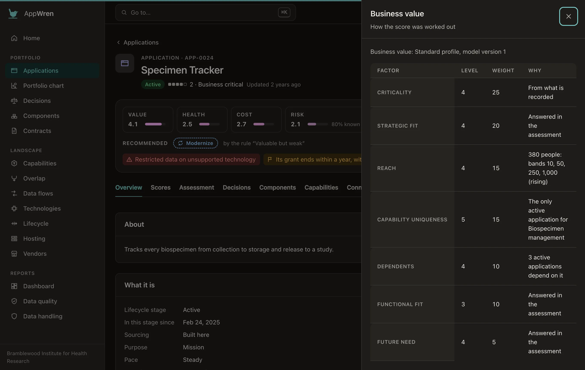
Recommendations
A recommendation, and the rule behind it
Invest, maintain, tolerate, modernize, replace, consolidate, retire, incubate, or assess: rules are tried in order, and the record names the one that matched.
A guardrail protects what must not go without a successor. A Retire for the only provider of a capability, or for a system of record for regulated information, becomes Replace, and the working says why.


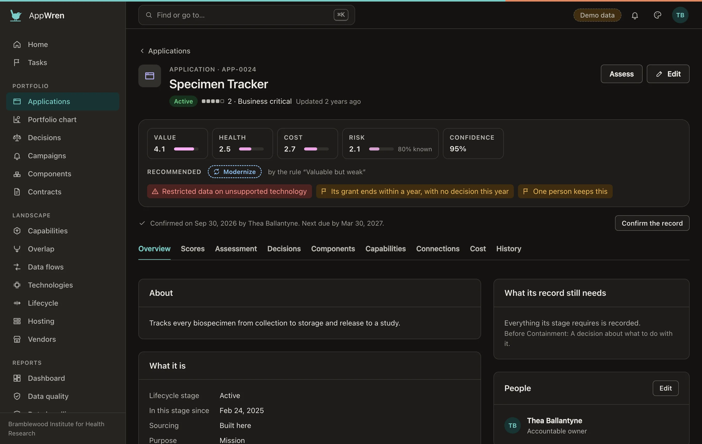
Decisions
A decision is a person's, with a reason and a date
Whoever leads the unit, or the portfolio team, records the disposition: what will be done, why, by when, and when to look again. The scores as they stood that day are kept with it.
A decision that differs from the recommendation is not an error. It is listed as a mismatch with its reason, so a review starts from the cases worth talking about.


Overlap
What are we paying for twice?
Applications are mapped to the capabilities they serve. Every capability served by more than one is listed with those applications side by side: scores, recommendation, decision, how many people use each, and what each costs.
Name a primary provider, and the others that are worth less are recommended for consolidation.

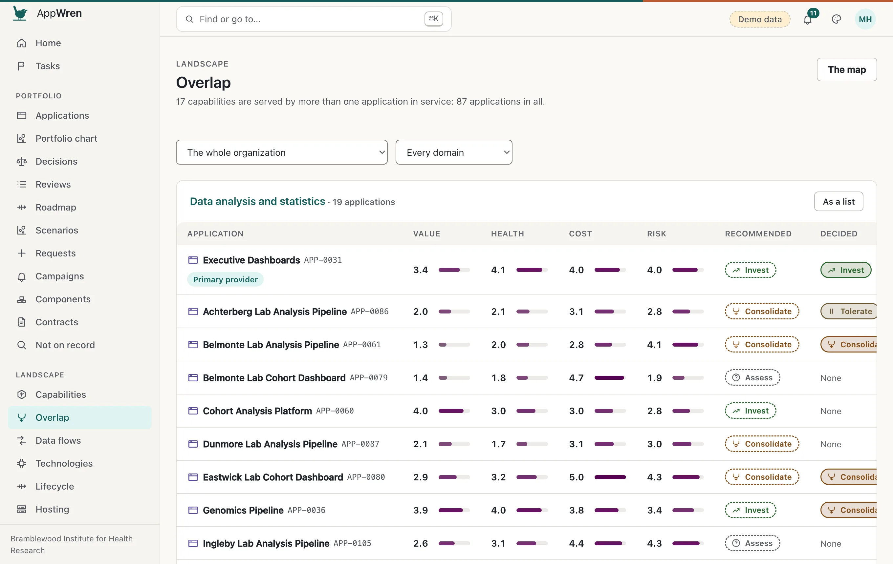

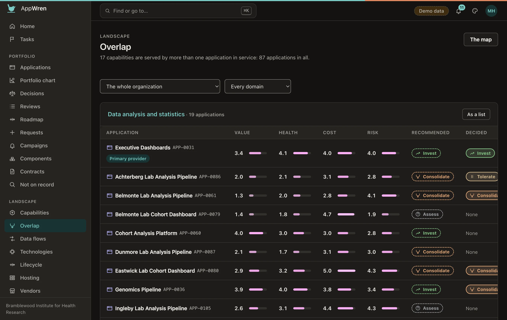
Impact
What breaks if this goes?
Before a retirement is recommended, an application's Connections say what it would touch: what depends on it, directly and in turn, the interfaces that would stop, and the capabilities left with nothing behind them.
It also says which units use it, up to how many people, and what its record says must outlive it, such as active studies or data that must be kept.


Data flows
Follow a class of data from system to system
An interface records data passing from one application to another: by what method, how often, and which classes of data it carries. Choose a class to see every interface that carries it and every application that holds it.
Where an interface delivers a class the receiving application's record does not list, the flow is marked, because that application's risk is understated until someone settles it.

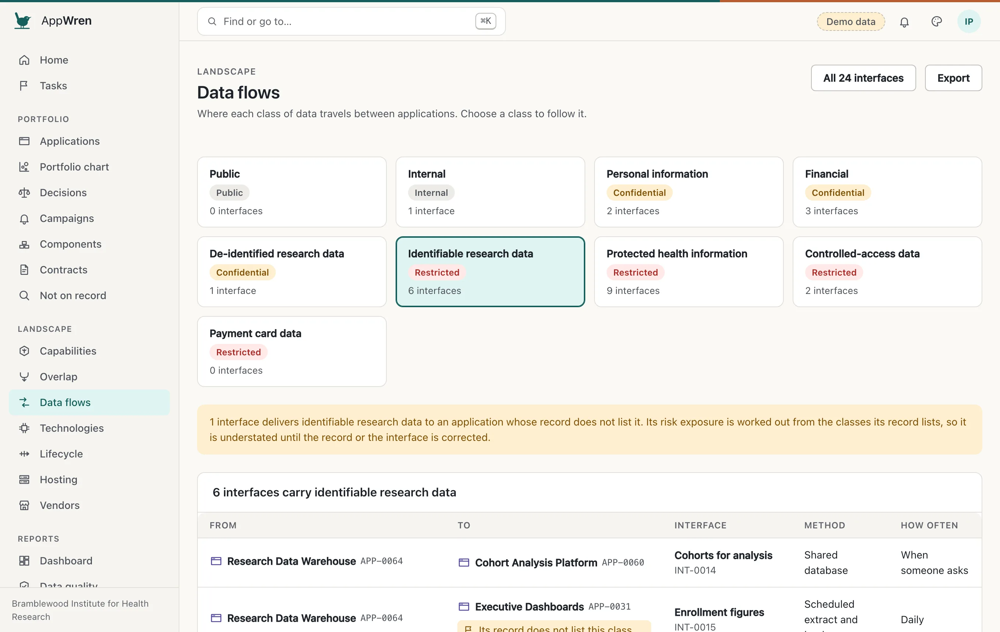

Lifecycle
What falls out of support, and what runs on it
Components are built on technology releases, and each release has a day its support ends. The timeline shows the releases in use, soonest first, with how many components in how many applications are on each.
Support dates can be typed, or brought in from a file of end-of-life data that you supply. An application on a release past its date scores worse for it, and one that also holds restricted data is flagged.


Cost
What it costs, line by line, and who pays
An application's cost is a list of lines: a license, hosting, a support contract, your own people's time, each with what pays for it. A grant has an end date, and an application paid for by one that ends within a year is flagged until someone decides what becomes of it.
Contracts carry their renewal and notice dates and whether a data agreement is in place. Cost and contracts are shown only to those who may see them, and a total is given whole or not at all.


Capabilities
The capability map, measured
The map shows what the organization does, and how many applications stand behind each part of it: none, one, or an overlap.
Measure it by any score, by data confidence, or by the health of the weakest application behind each capability, since a capability is as exposed as the worst thing it rests on.


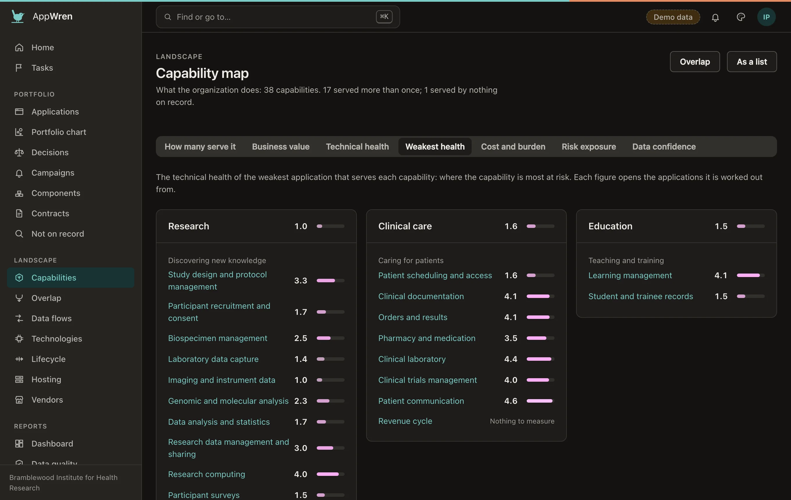
Connections
What is this connected to?
Every record opens to a picture of what it is joined to: what it depends on, where its data goes, the capabilities it serves, what it is built on, where it runs, and the contracts and funding behind it.
A list beside the picture says the same in full, and all of it works from the keyboard. Records the reader may not see are counted, never named.


Data handling
Which applications hold health data, and how well are they kept?
Choose a class of data and get the applications that handle it, with what an analysis of risk asks about each: who answers for it, where it runs, how people sign in, the support state of what it is built on, and whether a data agreement is in place.
The same rows export as a spreadsheet.


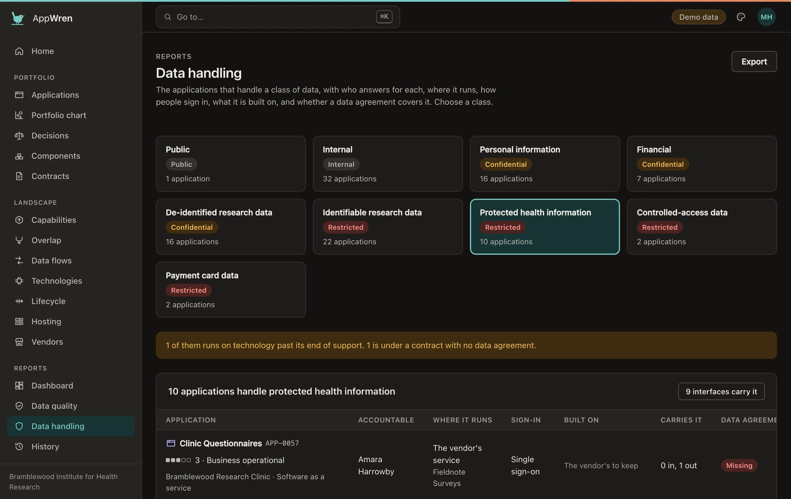
Keeping current
A record that says when nobody has looked at it
The people who keep an application confirm its record in one step, every six months for the most critical and every year for the rest. They are reminded before it falls due and after; if it stays late, their steward hears, then their leader.
A record past its date says so on its page, in data quality, and in its scores: its data confidence is fifteen points lower until someone confirms it, so a portfolio that goes stale cannot look as sure of itself as one that is kept.

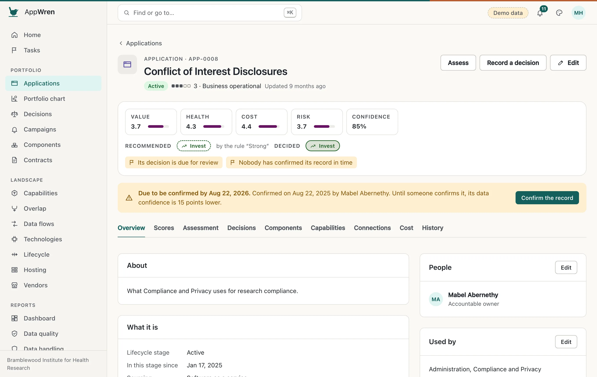

Campaigns
Ask the owners, and see who has answered
A campaign asks everyone who answers for the applications in a unit to confirm their records, or to assess them, by a date. Before it starts it says whom it would ask, and which applications have nobody to ask.
There is nothing to tick: an application is done when its record is confirmed or it is assessed. The campaign's page shows coverage by unit, least covered first, each figure the length of the list behind it.

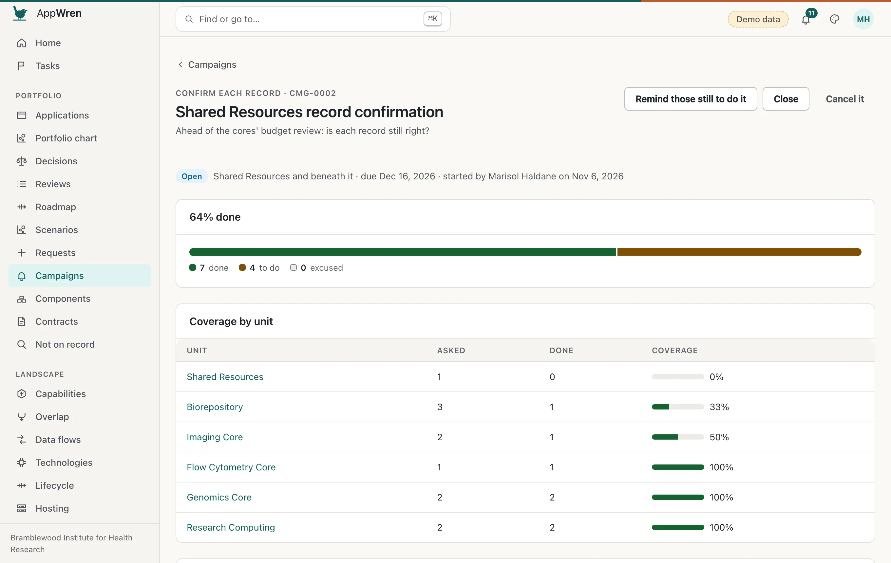

Tasks
What happens raises a task for whoever must act
A contract's notice date near, a release in use nearing the end of its support, a grant ending, an owner leaving: each raises a task for the person who must act, with a date and the reason.
A cause raises one task, never two, and the task closes by itself when its cause is settled. When someone leaves, everything they held is listed, and passed on in one step.


Planning change
From a decision to a change that is done
A portfolio review draws its agenda from what needs deciding in a unit, and keeps what it decided. A decision to change something becomes an initiative with its applications and dates, on a roadmap, in one step.
A request for something new is shown what already serves the need before anything is bought. An application cannot move on without what its next stage requires, and a retirement is a checklist that ends with its savings on record.


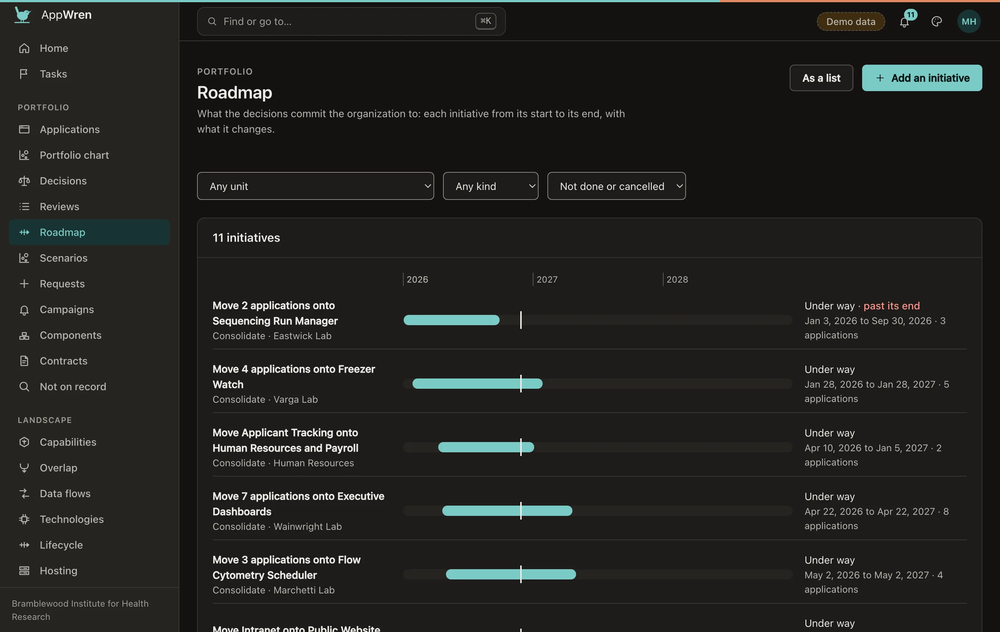
Facts from other systems
Facts that arrive by themselves, and never over a person
Connectors an administrator switches on, one at a time, read what other tools already know: support dates from the public end-of-life dataset, what each repository says about its component, and who signs in to what. Your own tools post the rest with a key that can do nothing else.
Each value is marked with where it came from and when, is in the history like any change, and can be overridden by whoever keeps the record, with a reason. Nothing is connected until someone connects it.

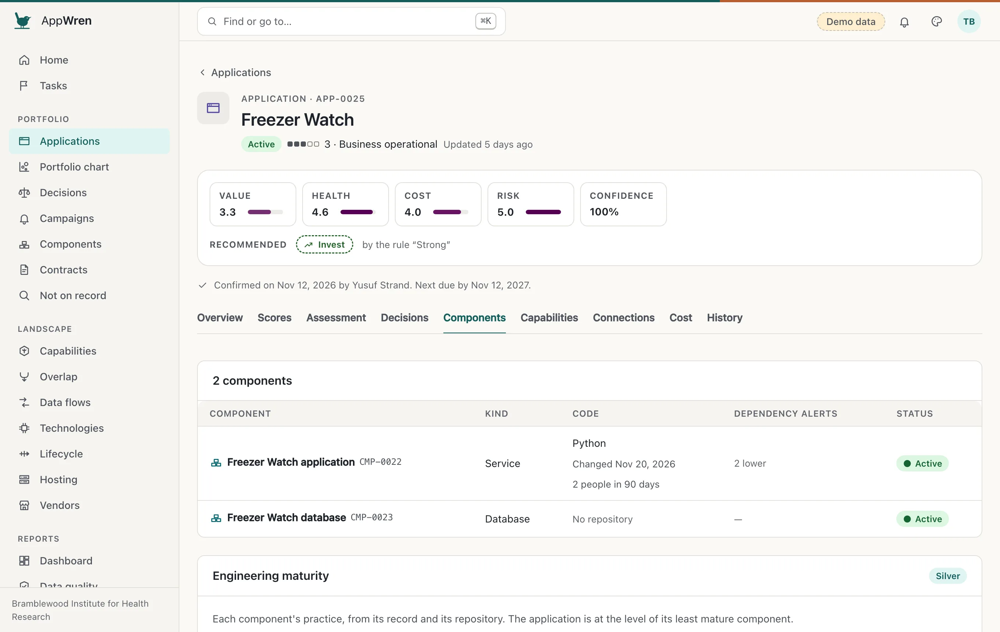

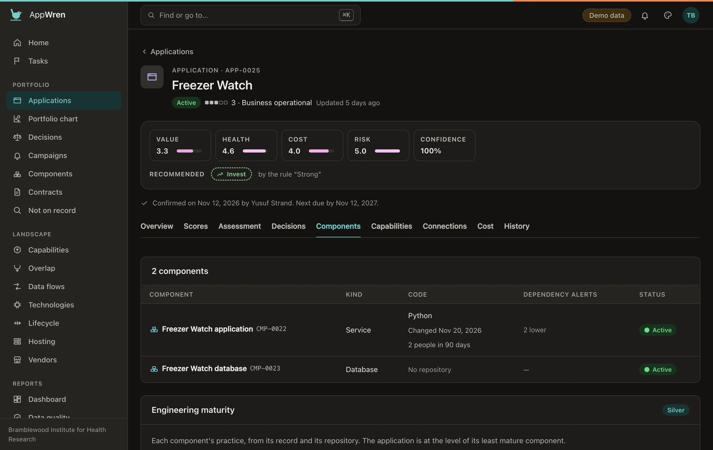
Engineering maturity
Bronze, silver, or gold, from checks rather than claims
Monitoring, backups, and documentation from the record; tests, continuous integration, dependency updates, and open alerts from the repository. Each component reaches the level its checks give, and its application the level of its least mature part, with what is missing for the next.
By unit, each count is a link to the list behind it. Where a source supplies them, these signals join the scores, and an application without one scores as before.


The program
See what a change would do before you make it
The lists, the organization's own fields, the wording of the questions, and the scoring model's weights, thresholds, and cadence are shaped in the app.
A changed model is previewed first: every application whose scores, recommendation, or flags would move is listed. Publishing makes a new version and changes exactly those; every decision keeps the scores it saw.

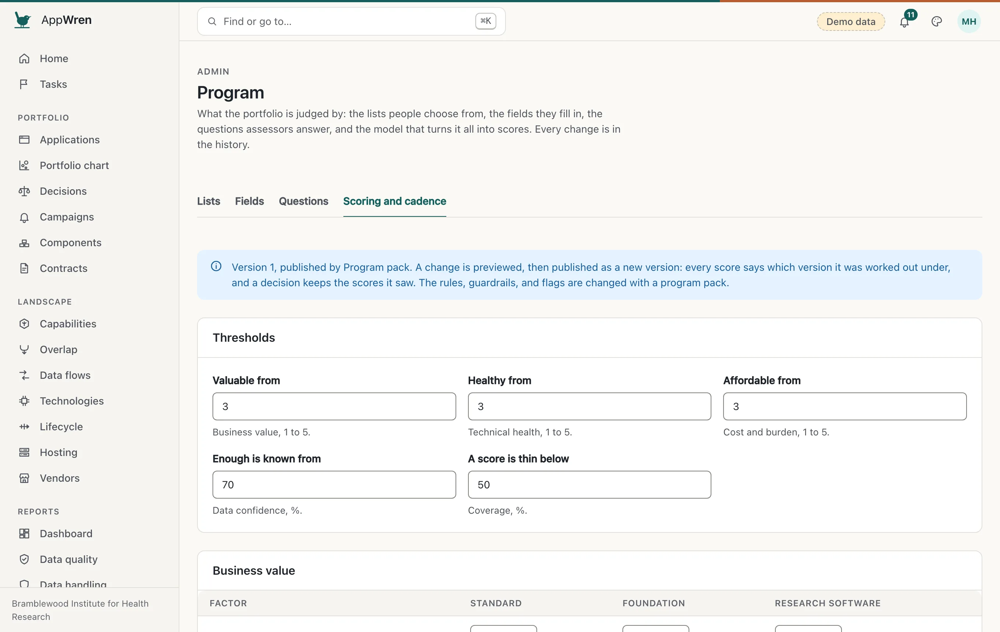

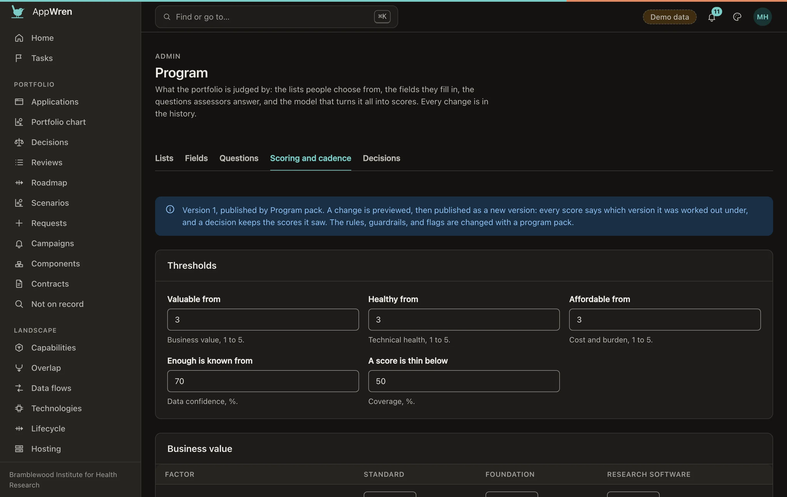
Home
One page of what each person owes
Most people who keep an application are not portfolio specialists. Home lists what is theirs to do: an application to assess, a record to confirm, a task, what a campaign asks, a record that lacks what its stage requires. A bell counts what is new, and email is there if you want it.
The dashboard gives the portfolio team the whole: recommendations beside decisions, flags, confidence, and what everything costs, with every figure a link to the list it counts.

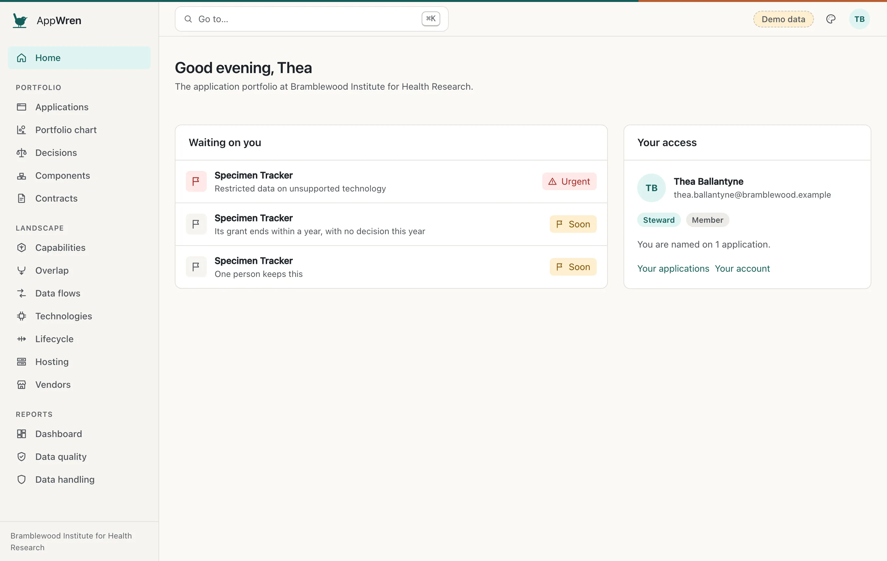

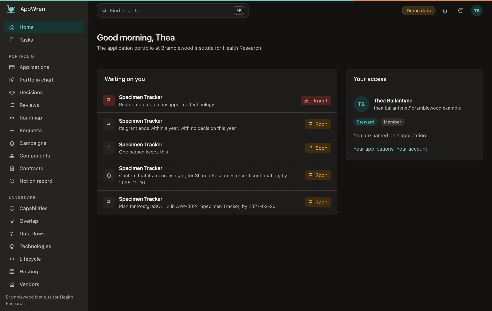
Also in it
One definition of an application
Applications, their components, and where each runs are separate records, so the portfolio compares like with like.
Judged by the right rubric
A shared platform is judged on what rests on it, and research software on whether it can be kept going. A pilot is not judged on use at all.
Ready for research
Grant funding and its end dates, studies that depend on an application, research data classes, and software kept by one person are all part of the record.
Working on the first day
The vocabularies, a starter capability map of 43 capabilities, a question bank, and a scoring model with its profiles, rules, and flags come with a new installation.
A program you can change
The questions, weights, thresholds, and rules are yours to change. Each version is kept, and every assessment and snapshot names the one it used.
A history that holds
Every change is in an append-only, hash-chained log, with who made it. An auditor reads everything and changes nothing.
The portfolio as it stood
A snapshot keeps every application's scores, recommendation, and decision on a day, so a review can be compared with the one before. One is kept each month by itself.
Find anything
One search across every kind of record, from the command palette. Any list's filters are kept under a name, and shared if you wish.
Say a score is wrong
An owner contests a factor with the evidence; the portfolio team accepts or answers it, and both stay on the record.
Written down once
Adding an application whose name, alias, or product is close to one on record shows that one first.
In and out
Applications come in from a spreadsheet, with a dry run that reports every problem by row. Every list exports as CSV, and as JSON through the API.
Who sees what
Roles are held over units. Sensitive fields, costs, and contracts are withheld from those who may not see them, in every list, figure, and export.
Where it runs
Hosting platforms list everything on them by environment: what would stop if a data center or a cloud account were lost.
Sign in your way
Local accounts out of the box. Optional single sign-on by OpenID Connect, built to work with Microsoft Entra ID, with roles and units taken from the provider.
Open and yours
Apache 2.0 with no paid edition. SQLite on a laptop or PostgreSQL on a server, no build step, and your own name and colors.
Try it
You need uv, which provides the right Python. Clone the repository and build the demo organization: a fictional research institute with a clinic, two years of history, 107 applications, three survey tools doing one job, a grant about to end, a database release reaching the end of its support, and a decision that differs from its recommendation.
git clone https://github.com/robert-mcdermott/appwren.git
cd appwren
uv sync
uv run appwren demo
uv run appwren --config demo/appwren.toml serveOpen http://127.0.0.1:8020. The sign-in page offers eight sample people and asks for no password. Start as the portfolio manager. Explore the demo organization says who to try next, and Getting started sets up an installation of your own.
The guides
appwren command and option
Where it stands
These pages describe version 0.10.0: the portfolio, the landscape around it, and the means of keeping both current. It signs in with local accounts or, if you set it up, single sign-on, and sends email only if you ask it to. Every fact is still typed or imported by a person: read-only connectors to the tools that already know them come next, then review cycles, initiatives, and the retirement playbook. The roadmap says what comes next and in what order, and the changelog lists what is in each release.